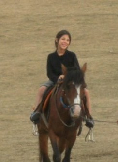

Swimming has been my favorite sport since I was very young. Water was always my comfort area. It is the place where I through every problem I have and start looking at life positively. Swimming always managed to empower the relationship between me and my family and friends while spending time at the pool or on the beach. While swimming we move are arms and legs which provides us with a full body workout. It is also beneficial for the hurt and lungs, thus it helps with moving the blood around the body.
